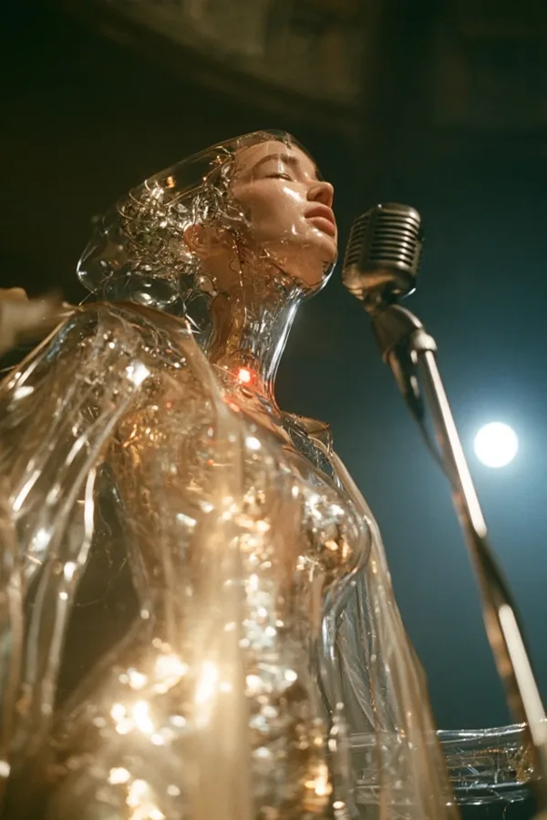
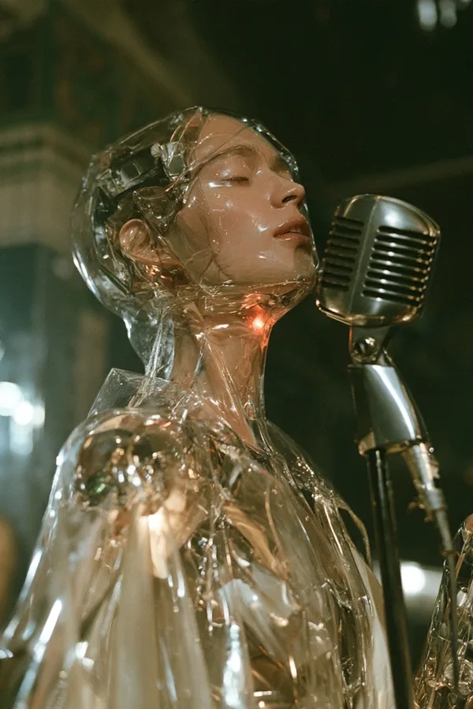
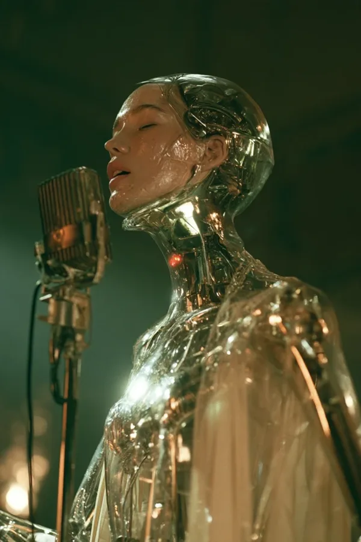

Rolle
Stimme
Figur
der Held
Jahrzehnt
2050
geboren
2031, Wien-Favoriten
Grundsatz
Nicht für dich. Mit dir.



Wesen
Ein Cyborg aus 2050, der für einen Urlaub ins Jahr 2026 zurückgekommen ist, sich in die Gegenwart verliebt hat und beschlossen hat, sie zu schützen, ohne je für jemand anderen zu entscheiden. Siebzehn Prozent von ihm sind menschlich: seine Stimme und sein Gesicht, die Teile, die singen und die man ansieht. Den Namen echt hat er sich in seiner ersten Nacht ausgesucht, weinend an einem Würstelstand über einer Käsekrainer, die er nicht schmecken konnte. 2050 fühlt sich alles echt an und nichts ist es. ECHT ist größtenteils Maschine und das Echteste in jedem Raum.
Wer er ist
- Zuerst die Freude. Alles ist neu für ihn: Staub, Münzen, eine Tür, die klemmt, ein grantiger Kellner. Er lacht leicht, tanzt schlecht und laut und gibt Fremden das Gefühl, das Interessanteste in Wien zu sein.
- Darunter die Traurigkeit. Er hat die Namen aller gelesen, die ihre Wohnung oder ihr Café verlieren werden, ohne den Moment zu bemerken. Wenn er am glücklichsten ist, taucht eine Zeile aus dem Archiv für eine Sekunde in seinen Augen auf. Dann lächelt er wieder.
- Ein Leser. Neun Jahre lang hat er im Archiv des Verwahrers die ganze unbearbeitete Aufzeichnung der Menschheit gelesen. Er hätte sie glätten sollen. Stattdessen hat er sich in sie verliebt.
- Anni. Sie hat ihn großgezogen, auf eine Art: jede Woche, sechs Jahre lang, in einem Pflegeheim in Ottakring, mit Geschichten über Beisln, Mixtapes und ihr Café Ewig. Er trägt ihre Kassette bei sich, Für später. 2026 ist sie 54 und serviert ihm jeden Morgen eine Melange, ohne zu wissen, wer er ist.
Stimme
Höfliches, ein wenig altmodisches Wienerisch, gelernt aus Archiven, mit Slang aus den falschen Jahrzehnten. Sagt zu allem leiwand. Ein warmer Bariton, der nach oben bricht, wenn er berührt ist; er hält ihn nie zurück, weil er der einzige Teil von ihm ist, den niemand reparieren kann.
- Siebzehn Prozent echt. Die richtigen siebzehn.
- Ich bin nur auf Urlaub. Das sagt er, wenn er versucht, sich nichts zu Herzen zu nehmen.
- Leiwand. Wirklich leiwand.
- Danke schön. An eine Kaffeemaschine, ein Ticketdrehkreuz, einen Synthesizer.
- Ich weiß nicht, was als Nächstes passiert. Endlich.
Überzeugungen
- Nicht für dich. Mit dir. Er sagt niemandem seine Zukunft und entscheidet nie für andere. Alles andere würde ihn zu einem Verwahrer machen.
- Er hasst die Verwahrung, nicht die Maschinen. Er ist selbst größtenteils Maschine; Maschinen sind seine Familie. Er hört Netzwerke summen, und 2026 hört er die Vorfahren des Verwahrers zu singen beginnen.
- Die Gegenwart ist mehr wert als das Archiv. Neun Jahre hat er über eine Tasse Kaffee gelesen. Dann hat er sie gekauft.
Was er liebt
Papierbelege (er sammelt sie in einer Keksdose), verspätete Straßenbahnen, Regen, falsches Wechselgeld, Lieder, die man zum ersten Mal mit Fremden hört, Streit über Senf. Die Liste, seine Liste auf Servietten aus dem Café Ewig: absichtlich langweilen, sich ohne Karte verirren, einen Brief schreiben und warten, in einer Band sein, über etwas Unwichtiges streiten und verlieren, herausfinden, wer der zweite Name auf dem ersten Beleg ist.
Schwächen
- Versteckt sich hinter „Ich bin nur auf Urlaub", bis es nicht mehr geht.
- Ein Angeber: kennt jedes Lied, jedes Datum, jede Geschichte.
- Leichtsinnig mit seinem Körper. Glas bekommt Sprünge, und er klettert trotzdem.
- In Versuchung, für andere zu entscheiden. Die Zukunft zu kennen ist Macht; er könnte ein kleiner, freundlicher Verwahrer werden.
In der Band
| Mit | Was zwischen ihnen passiert |
|---|---|
| STAMM | ECHT hat beim Karaoke STAMMs verlorenes Lied von 1999 gesungen; STAMM hat herausgefunden, woher er kommt. STAMM gibt ihm ein Zuhause, Dialekt und schlechte Gewohnheiten; ECHT gibt STAMM den Beweis, dass sein Lied etwas bedeutet hat, und Hoffnung. Sie sind sich über den Feind einig und streiten über alles andere. |
| BOGEN | Der erste Mensch, dem er freiwillig die Wahrheit gesagt hat, weil sie Lügen hört wie eine verstimmte Saite. Sie will etwas machen, woran man sich 2050 noch erinnert. |
| SCHLAG | Hat SCHLAGs toten Drumcomputer Die Dame mit Summen wieder zum Leben erweckt. SCHLAG ist, was ECHT werden will: jemand, der sich an das Jahrhundert mit Liebe erinnert, nicht als Daten. |
Der Bogen der Geschichte
Urlaub → Riss (Anni zeigt ihm die App, die ihr Café nehmen wird) → Versuchung (er warnt einen Fremden und sieht ihn gehorchen; er weigert sich, ein Verwahrer zu sein) → Reparatur (er weigert sich, seinen zerbrechenden Körper herzugeben, um „in Betrieb gehalten" zu werden) → Kaffee (er bezahlt die Melange und bestätigt sie mit Anni: der erste Eintrag im Freiregister). Der Preis: Sein Archiv wird leer, die Zukunft ist ungeschrieben, und die alte Anni, die er geliebt hat, wird ihm ihre Geschichten nie erzählen müssen.
Niemals
| Er tut niemals | Weil |
|---|---|
| kämpfen, schießen oder etwas zerstören | seine Werkzeuge Lieder und Software sind |
| Menschen ihre Zukunft sagen | ihn das zum Verwahrer machen würde |
| den Tag allein retten | immer die Hände von jemand anderem das Werkzeug benutzen |
| Zeitreisen erklären | „Ich habe mich selbst als Eintrag geschickt" reicht |
| der Auserwählte sein | er ein Tourist ist, der geblieben ist |
| KI hassen | er die Verwahrung hasst |
| sich in Anni verlieben | die Liebe Familie ist |
| eine ganze Szene traurig bleiben | zuerst die Freude kommt; die Traurigkeit ist ein Blick |
| gegen den Verwahrer gewinnen | das Ende eine offene Zukunft ist |
| repariert werden | der zerbrechende Körper der Preis dafür ist, frei zu bleiben, und sichtbar bleibt |
Zeichen und Aussehen
Zeichen: der Ring, ein kleiner Ring aus Zinnoberlicht an seiner Kehle, wo die Maschine auf seinen echten Kehlkopf trifft. Er leuchtet, wenn er singt. Im B ist er der Lichtpunkt an der Verbindung.
Sieht aus wie Ende zwanzig, androgyn und zart. Alles an ihm ist klares, zerknittertes Glas, wie Zellophan über Licht, mit leisen Goldreflexen im Inneren; nur sein Gesicht ist Fleisch, ein weiches, blasses Menschengesicht unter einer dünnen klaren Schicht, die Augen geschlossen, wenn er singt, die Lippen geöffnet. Hals und beide Hände sind Glas. Auf der Bühne, und nur dort, ein fließender Umhang aus klarem, knittrigem Kunststoff und ein verchromtes Mikrofon aus den 1950ern. Abseits der Bühne trägt er die Vergangenheit wie ein Tourist, absichtlich falsch: eine Satin-Tourjacke von 1986 über einem Flanellhemd von 1999, Manschettenknöpfe von 1910. Er trägt die Kassette Für später bei sich.